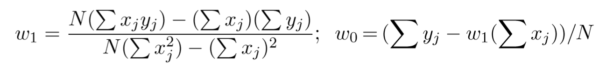

Note that mobile support hasn't been added, yet
This is the simplest kind of regression. Simply put, the function that generates the data is linear (actually it is linear in the weights but can be non linear in the inputs, this is discussed in the next algorithm “SVM” as the kernel trick). This means that f(x) is a straight line. Linear regression attempts to find a function h(x) that approximates f(x) given the data generated by f(x) (which could have noise added to it). How can we do that?
First, we need to define an error function that takes in h(x) as an input and returns the error between our approximation and the given data. The most common error functions used are mean-squared-error and mean-absolute-error.
If the input data is $$(x_{1},y_{1}),(x_{2},y_{2}),...,(x_{N},y_{N})$$
The mean squared error (MSE) = $$\frac{1}{N}\sum {[h(x_{i})−y_{i}]^2}$$
The mean absolute error (MAE) = $$\frac{1}{N}\sum {\left | h(x_{i})−y_{i} \right |}$$
Now that we have a measure of the error we want to minimize it. To do that we must determine what variables affect the error. Your first guess might be the inputs; however, note that the inputs don’t change while we run the algorithm, the values that change are the parameters in h(x). Since h(x) is linear, h(x) = mx+b, this function changes according to m, and b. We will let and . Again x doesn’t affect the error here as it is part of the input values which are constant during training.
Using some calculus, we take derivatives and reach the following formulas:

To have a better intuition, let us see what happens with MSE and MAE in weight space. Weight space is a basically the space where the axes are the weights. We will use it to visualize the error function which changes according to w1 (on the y-axis) and w2 (on the x-axis)
The color at a point determines the error, red is the highest error and blue is the least error.
What is the difference between using MAE and MSE?
Without going into the math too much, MAE encourages sparse weights (weights that equal 0 or that are small), while MSE doesn’t.